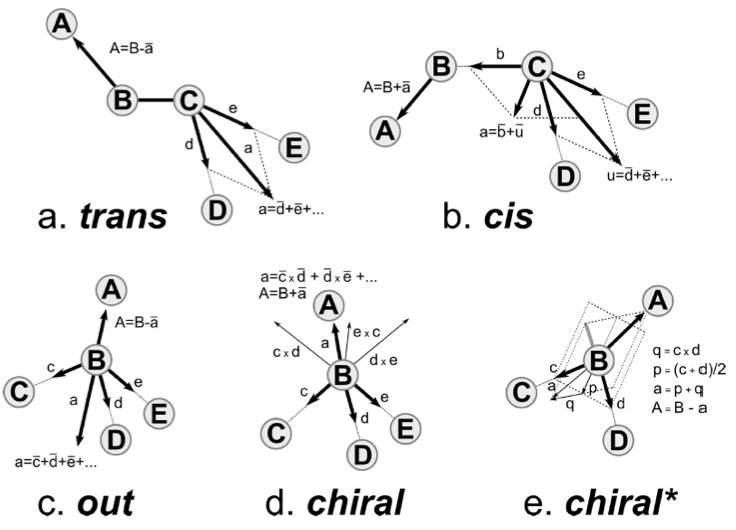
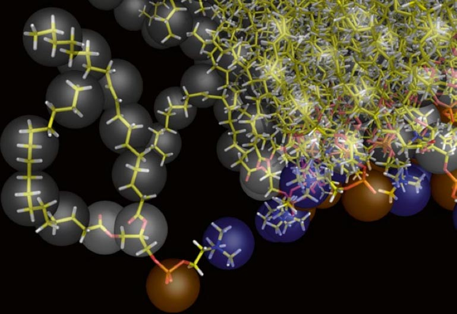
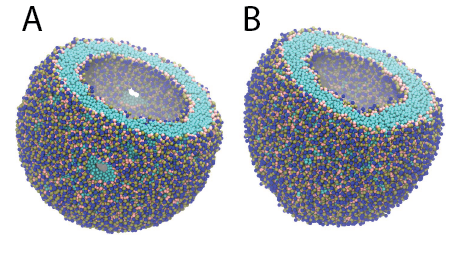

Other
The material offered in this page is LEGACY material. This means that it either pertains to older iterations of the Martini force field and/or that it is no longer actively supported. However, this does not mean that there aren’t cool things to be learned here! Have a look! If you are looking for the current iterations of the Martini force field lectures or hands-on tutorials, click here to go back!
Backward
Backmapping or reverse coarse-graining or fine-graining a coarse-grained (CG) structure requires a correspondence between the two models; i.e., for atomistic and CG: which atoms make up which bead. Actually, an atom can in principle contribute to several beads. A backmapping protocol needs to know at least which atoms contribute to which bead. Existing schemes then use rigid building blocks anchored on the CG bead, or place the atoms randomly near the bead in an initial guess and the structure is relaxed based on the atomistic force field, usually by switching it on gradually. The method used in this tutorial is backward[1], developed by Tsjerk Wassenaar. Backward allows for an intelligent, yet flexible initial placement of the atoms based on the positions of several beads, thereby automatically generating a very reasonable orientation of the groups of atoms with respect to each other.
First, we go over the scripts used in the backward[1] method. Second, we describe the structure and setup of the needed CG to fine-grained mapping files, taking the mapping file for valine as an example. Last, we demonstrate the method by backmapping a CG membrane embedded aquaporin 1, as described in[2].
More extensive discussion and examples, including tutorial material can be found in the paper by Wassenaar et al.[1], and Supporting Material to that paper.
The method
The backward program is available here (download the zip-file for the version of Mapping files you need and possibly download another version of the initram.sh script), and consists of three scripts and a number of CG to fine-grained mapping definition files. The scripts are backward.py, initram.sh and in the Mapping directory __init__.py and a number of .map files. The .map files describe the CG to fine-grained mapping and a file needs to be provided for each molecule (or its building blocks) in your system. The __init__.py script interprets the .map files. The backward.py script performs the actual backmapping and initram.sh is a bash wrapper that runs a series of minimizations and molecular dynamics steps, using the fine-grained force field to push the initial backmapped structure to one that satisfies the fine-grained force field.
Mapping
A requirement for the procedure to work is that the subdirectory Mapping contains definitions for how the atomic positions are generated from the CG positions. The subdirectory Mapping contains a file for each residue and/or molecule that can be backmapped, named for the atomistic target force field, e.g. val.oplsaa.map for a valine residue targeted to OPLS-AA. Updates of the Martini and/or other force fields may results in changes in the mapping files, so beware you may need to make changes and/or find the appropriate mapping files. You can download mapping files for each of the lipids in the lipidome library, for example the mapping file for cholesterol. The structure of a .map file is explained below for the valine residue. The file val.oplsaa.map reads:
[ molecule ]
VAL
[ martini ]
BB SC1
[ mapping ]
oplsaa
[ atoms ]
1 N BB
2 H BB
3 CA BB
4 HA BB
5 CB SC1 BB
6 HB SC1 BB
8 CG1 SC1
9 HG11 SC1
10 HG12 SC1
11 HG13 SC1
12 CG2 SC1
13 HG21 SC1
14 HG22 SC1
15 HG23 SC1
16 C BB
17 O BB
[ chiral ]
CB CA N C
HB CA N C
[ chiral ]
HA CA N CB C ;L-Val
;HA CA N C CB ;D-Val
[ out ]
CG2 CB CG1 CA
HG21 CB CG1 CA
HG22 CB CG1 CA
HG23 CB CG1 CADirectives analogous to gromacs topologies contain specifications that build the atomistic structure from the CG positions. The [ molecule ] directive contains the name of the residue or molecule. The [ martini ] directive contains the names of the CG beads in the Martini model: valine has two beads called BB and SC1. The [ mapping ] directive contains the name of the object model. Note that this directive may contain multiple object models. If you do not care for the naming convention of different force fields, you can use the same mapping file for the CHARMM36 and OPLS-AA/L force fields, because these are both all-atom models which in the GROMACS implementation also use the same order of the atoms (if not the same names). Thus, the mapping files for the methylated terminal ends explicitly state that they can be used for mapping to both OPLS-AA and CHARMM36 force fields.
The [ atoms ] directive contains the index numbers and names of the atoms in the object model and their relation to the CG beads. Note that a single atom may be in a relation with more than one CG bead. The back-mapping procedure starts by putting each atom that is related to a single bead on the position of that bead. If an atom is related to more than one bead, it will be placed on the weighted average position of the beads listed. It is allowed to list the same bead multiple times; thus the line
4 OE1 BB BB BB SC1 SC1places the fourth atom (with name OE1) of the residue on the line connecting the BB and SC1 beads at 2/5 of the distance between the beads, starting at the BB bead. This mechanism is a simple aid to position atoms already at fairly reasonable starting positions. Using the -kick flag displaces all atoms randomly after their initial placement. Note that the script applies a random kick to atoms that are initially put at exactly the same place, e.g. because they are defined by the position of a single bead. Thus, no two atoms will be on top of each other. Switching on an atomistic force field usually results in an error if two interacting atoms are at exactly the same place.
The backward procedure implements a few other more sophisticated mechanisms to place atoms and some are used in the valine residue. Implementation can be found in the file Mapping/__init__.py. The [ chiral ] directive generates stereochemically specifically arranged groups of atoms. As is seen for valine, two types of input can be provided. In the first instance of the [ chiral ] directive, four atoms are listed on a line. The first atom is the atom to be placed (named A in Figure 1e, chiral*) on the basis of the positions of the other three. The Figure shows how vectors are defined from the positions of the other three particles to construct the position of the first atom. In the second instance of the [ chiral ] directive, five atoms are listed on a line. This corresponds to the construction shown in Figure 1d, chiral. The [ out ] directive may be used to spread out several equivalent atoms (as on a CH3-group) away from the center of the bead in a reasonable manner, as shown in Figure 1c, out. Again, be aware that atoms initially placed on the same spot, are randomly displaced; therefore, using the same reference atoms as in the example still leads to different positions for the generated atoms.

Backmapping aquaporin 1
Here we backmapp a CG membrane embedded aquaporin 1 into CHARMM36 atomistic coordinates, as described in[2]. The files for this part of the tutorial are available in aquaporin_backmap.tar.gz. Missing residues were added to aquaporin 1 and it was converted to Martini CG coordinates, solvated in a CG POPC bilayer with ions and polarizable water. Then simulated for 100 ns at the CG level with position restrains on the protein, see[2] for method details and CG_posre.gro for final coordinates. Note, without position restraints on the protein the CG protein might (depending on the protein in question and the CG force field used) evolve to far away from a possible fine-grained structure, rendering backmapping impossible.
We are going to use the initram-v5.sh script, which calls backward.py and then runs a series of minimization and equilibrium simulations to get the final backmapped structure. To run the script we need the following:
The CG structure to backmap, provided in
CG_posre.gro.A complete fine-grained force field corresponding to all the CG molecules in
CG_posre.gro. Here we use CHARMM36, see all.itpfiles provided andtopol.top, which contains the molecules in the same order they are present inCG_posre.groand with the same names. Note, water and ions can be skipped in the.topfiles as they are automatically detected bybackward.py.A
.mapfile in the Mapping directory for all residues and molecules to be backmapped (water and ions can also be skipped here as their definitions are included inbackward.py). The.mapfiles are collected in a directory called Mapping. NOTE that the coarse-grained structure used here uses an older Martini model for oleoyl chains, represented by 5 beads, rather than the current version of Martini that uses 4-bead representation of oleoyl chains. Therefore, you will need the ‘older’backward.zip. file and the ‘newer’ scriptinitram-v5.py.
The initram.sh script uses the gromacs package so a proper version needs to be sourced, i.e. a version of initram.sh that is compatible with the gromacs version you are using.
Run the script using the following command:
$ ./initram-v5.sh -f CG_posre.gro -o aa_charmm.gro -to charmm36 -p topol.topAfter successful backmapping the aa_charmm.gro file will contain POPC membrane embedded aquaporin 1 as well as the solvent at fully atomistic resolution according to the CHARMM36 force field. Figure 2 illustrates the backmapping of a few POPC molecules. When running the backmapping script please keep in mind that initram.sh generates a significant number of temporary files so backmapping in a separate directory can be a good idea and that backward.py used random kicks to initially displace the atoms so rerunning the same command can give different results (and even though some runs might results in an error others may not).

Polarizable water
In this part of the tutorial we will convert water in an existing Martini-system to polarizable water. In the polarizable Martini paper[3] the model is described as follows:
“The polarizable CG water consists of three particles instead of one in the standard Martini force field. The central particle W is neutral and interacts with other particles in the system by means of the Lennard-Jones interactions, just like the standard water particle. The additional particles WP and WM are bound to the central particle and carry a positive and negative charge of +0.46 and -0.46, respectively. They interact with other particles via a Coulomb function only, and lack any LJ interactions. The bonds W-WP and W-WM are constrained to a distance of 0.14 nm. The interactions between WP and WM particles inside the same CG water bead are excluded, thus these particles are”transparent” toward each other. As a result the charged particles can rotate around the W particle. A harmonic angle potential with equilibrium angle phi = 0 rad and force constant \(K_h = 4.2 kJ mol^{-1} rad^{-2}\) is furthermore added to control the rotation of WP and WM particles and thus to adjust the distribution of the dipole momentum.”
If you want to solvate a new system with polarizable water, follow the steps in the lipid or protein Martini tutorials. Instead of a normal waterbox and .mdp/.itp files use the waterbox containing polarizable water and polarizable Martini .mdp and .itp files (available to download here). Note that minimizing a polarizable Martini system requires some tweaking, as described below. We encourage you to get all downloads yourself, but if you insist on taking a short-cut, you can download an archive with just the basic files here and with worked example output here.
If you have an existing system with normal Martini water and want to change to polarizable water you may use the python script [triple-w.py](https://cgmartini-library.s3.ca-central-1.amazonaws.com/0_Tutorials/legacy_material/martini2/triple-w.py). For this example we convert dppc_bilayer.gro/dppc_bilayer.top available here.
- Create a new gro file:
$ python triple-w.py dppc_bilayer.groThe python-script triple-w.py adds positive and negative sites at a small distance to every central water bead in a .gro file.
Adapt the
.topfile. Make sure the polarizable version of the particle definition file[martini_v2.2refP.itp](../../../downloads/force-field-parameters/martini2/particle-definitions.qmd)is included if you want to use the refined polarizable water model, otherwise include the older version. An example of an.mdpfile can be downloaded here. Make sure your .mdp is compatible with the polarizable water version; this one use the reaction-field electrostatics, but the refined polarizable model is particularly suitable for long-range electrostatics (coulomb_type = PME). The.itpfiles for the lipids and possibly other molecules do not have to be changed.If polarizable water is used in combination with proteins or peptides, all AC1 and AC2 beads have to be replaced by normal C1 and C2 beads. AC1 and AC2 are obsolete in polarizable Martini.
Minimize the system. For polarizable water to minimize without problems, it is SOMETIMES necessarry to change the constraints to stiff bonds. Using the ifdef-statement in the
.itpfile, this can be set using a define value in the.mdpfile (have a look at the bottom ofmartini_v2.P.itpto see how it works).Generate the input files for the minimization run:
$ gmx grompp -f martini_v2P.x_new-rf-em.mdp -c dppc_bilayer_PW.gro -p dppc_bilayer.top -o em -maxwarn 1- Proceed with equilibration (e.g. using martini_v2P.x_new-rf-eq.mdp) and production (e.g. using martini_v2P.x_new-rf-md.mdp) runs. Note, the mdp files linked to here have not been tested extensively (August 2017). They appear to give a stable simulation of the DPPC bilayer in polarizable water, but the scope of these parameters has not been validated systematically in the systems described in the original paper.
CHARMM-GUI Martini Maker
The CHARMM-GUI input generator now supports the Martini force field[4]. The Martini Maker supports building solution, micelle, bilayer, and vesicle systems, and systems with randomly distributed lipids. The Martini Maker has all the common Martini lipids as well as supporting variations of the Martini model (polar and nonpolar Martini, Dry Martini, and ElNeDyn). The CHARMM-GUI has an easy to use step-by-step user interface, please explore the Martini Maker input generator at http://www.charmm-gui.org/.
Following is a very short tutorial on how to make a Dry Martini vesicle using Martini Maker.
Go to the CHARMM-GUI -> Input Generator -> Martini Maker -> Vesicle Builder website.
Select the box for Vesicle Only System and in the drop-down menu, select the Dry Martini option, then press Next Step: Select Lipids.
Set the vesicle radius to 120 Å and generate a single-lipid system containing only DPPC lipids by setting the ratio of DPPC to 1 for both outer and inner leaflet, leaving the value for all other lipids to 0. Press to (re)calculate the number of lipids. Then press Next Step: Determine the System Size. The webserver will set to work and show you what it is doing. Wait for the process to finish (this may take a while; the pop-up information box will disappear when the server is done).
In the Step 1 menu, you will be given some information about the system. Add 150 mM NaCl ions (this is the default set for you). Then press Next Step: Build Components. Again, the server is working for you. Wait for the process to finish; this may take some time. The pop-up information box will disappear when the server is done.
In the Step 2 menu, just press Next Step: Assemble Components. The server is working for you. Wait for the process to finish. Note that references are made to ions and solvent. Since you have selected Dry Martini, not solvent will be added, but the server may still issue solvent-related comments.
You are still in the Step 2 menu. Press Next Step: Assemble Components. More work is done by the server. Wait for the process to finish.
In the Step 3 menu, information regarding the system size and contents is shown. Set the temperature to 323 K. Press Next Step: Generate Equilibration and Dynamics Inputs. The server works to provide you with
gromacsfiles. You will arrive in the Step 4 menu. The files generated by the Gui are packed into an archive (charmm-gui.tgz). A download button for this archive is shown in red in the top right-hand side corner.Download the final files (just click on the read “download .tgz” button) and unpack them on your computer (
tar -zxvf charmm-gui.tgz). The archive expands to a directory calledcharmm-gui. You will find thegromacsinput files in the foldercharmm-gui/gromacs/. Enter this folder.The
READMEfile is helpful by showing you the commands for running the energy minimization and equilibrium steps using the provided.mdpfiles. Note that in5and abovegromacscommands are not called directly but throughgmxe.g. notgromppbutgmx grompp(orgmx_d grompp). You may need to change that in theREADMEfile if you want to use it as a shell command that automatically executes the entire protocol.Note, the vesicle equilibrium runs require
gromacsversion 5.1 or greater. In the equilibrium runs pores through the vesicle bilayer are held open to allow lipids to flop-flop and equilibrate between the inside/outside leaflets. The potentials used to keep those pores open are only supported ingromacsversion 5.1 or greater. Pores are kept open using so-called flat-bottomed position restraints. These are described in the Version 5 manual in section 4.3.2. The pores are activated/controlled by setting thedefine = -DVESICLE_LIPIDTAIL_R=1in the.mdpfile. This flag activates position restraints set in the.itpof all the lipids and the provided restraint coordinates filelipidtail_posres.pdb.Note, the initial energy minimization normally requires a double precision installation of
gromacs. The reason is that some beads may be very close to each other in the initial structure, leading to very high forces; in the single-precision installation, these forces may be interpreted as infinite and therefore cause the minimization to fail. There is a workaround that problem, however. By using soft-core potentials in the first minization steps, forces will not be infinite and the double precision version is not required. The script equivalent to theREADMEfile containing the protocol and the setting.itpfiles for the dry DPPC vesicle of this tutorial are available here. Note that for other systems, you may need edits. After download, place thesoft-core-minimization.tgzfile in the foldercharmm-gui/gromacs/. Unpack and run the protocol.
$ tar -xzvf soft-core-minimization.tgz
$ ./minimization-equilibration.sh- A word of WARNING! Proper equilibration of lipids between the leaflets, even with the open pores can take quite long, and will vary depending on vesicle size and lipids composition. The default time for the equilibrium runs is set to 500 ns which will take very long (days) if run on your desktop machine. Also, the time-step may be too large in some cases, so keep an eye on the simulations.
The structure (.gro) files after each equilibration step and after the \(1 \mu s\) simulation can be downloaded here.

References
[1] Wassenaar, T. A., Pluhackova, K., Böckmann, R. A., Marrink, S. J., and Tieleman, D. P. (2014) Going Backward: A Flexible Geometric Approach to Reverse Transformation from Coarse Grained to Atomistic Models. J. Chem. Theory Comput. 10, 676–690.
[2] Pluhackova, K., Wassenaar, T. A., and Böckmann, R. A. (2013) Molecular Dynamics Simulations of Membrane Proteins, in Methods in Molecular Biology (Rapaport, D., and Herrmann, J. M., Eds.), pp 85–101. Humana Press.
[3] Yesylevskyy, S. O., Schäfer, L. V., Sengupta, D., and Marrink, S. J. (2010) Polarizable Water Model for the Coarse-Grained MARTINI Force Field. PLoS Comput Biol 6, e1000810
[4] Qi, Y., Ingólfsson, H.I., Cheng, X., Lee, J., Marrink, S.J., and Im, W. (2015) CHARMM-GUI Martini Maker for coarse-grained simulations with the Martini force field. JCTC, doi:10.1021/acs.jctc.5b00513.